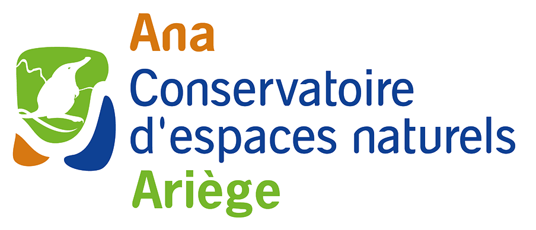

Cédric Roy
Vous y découvrirez mon parcours professionnel : du terrain, de la coordination de programmes de conservation d'espèces menacées, de la gestion de bases de données, de SIG et de systèmes d'informations ainsi que de l'analyse de données.
Survolez les éléments de la Time line et des expériences professionnelles ci-contre pour vous déplacer sur la carte.
Vous pouvez également cliquer sur les marqueurs de la carte pour afficher les détails.
Vous pouvez également voir quelques exemples de mon travail en cliquant sur certains logos ci-contre.
Expériences professionnelles
-

Chargé de projet Système d'Information
- Gestion des bases de données
- Gestion du Système d'Information Géographique
- Outils de saisie, de gestion et d'administration des données
- Gestion du parc informatique
- Gestion du cloud
- Webmapping
Ana - Conservatoire d'espaces naturels Ariège
Mars 2022 - Aujourd'hui
Alzen, Occitanie, France


- Développement d'une application sous PostgreSQL/PostGIS et GEO pour le suivi du Grand Hamster
Office français de la biodiversité
Janvier 2022 - Février 2022
Toulouse, Occitanie, France
-
Chargé de conservation du patrimoine naturel de l'île Europa
- Inventaires et suivis (oiseaux, reptiles, gastéropodes, orthoptères, rhopalocères, flore patrimoniale)
- Gestion (inventaire et lutte) des espèces exotiques envahissantes
- Formation et sensibilisation à l’environnement (visites de découverte de l’île aux différents visiteurs – militaires et civils)
Terres australes et antarctiques françaises (TAAF)
Septembre 2020 - Août 2021
Île Europa, Îles Eparses-TAAF, France
- Gestion du Système d'Information Géographique et des bases de données (en lien avec un informaticien).
- Coordination régionale de programmes de connaissance et de conservation (Listes rouges, STOC-EPS, ZNIEFF, PNA Cistude d'Europe, PNA Sonneur à ventre jaune).
- Expertises ornithologiques, herpétologiques et malacologiques.
- Validation scientifique des données ornithologiques, malacologiques et herpétologiques et de la base de données du CEN PACA et de SILENE-PACA.
Conservatoire d'espaces naturels Provence-Alpes-Côte d’Azur
Juillet 2012 - Février 2020
Sisteron, Provence-Alpes-Côte d'Azure, France
- Suivi de la reproduction (en bateau, kayak), de l'étude sur l’alimentation des sternes pierregarin, naine, de Dougall et caugek, du gardiennage des colonies.
- Gestion des espèces exotiques envahissantes.
Bretagne Vivante - SEPNB
Mars 2012 - Juin 2012
Brest, Bretagne, France
- Récolte et analyse des données piézométriques du département.
Direction Départementale des Territoires d'Indre-et-Loire
Octobre 2011 - Décembre 2011
Tours, Centre-Val de Loire, France
- Inventaires et du suivi de la reproduction de plusieurs populations d’Outarde de Macqueen.
- Capture et baguage d’individus.
Reneco International Wildlife Consultants LLC
Mars 2011 - Juin 2011
Région du lac Balkash, Kazakhstan
- Suivi de l'actualisation des ZNIEFF de Normandie : cartographie, gestion de base de données et diffusion des données ZNIEFF.
Direction Régionale de l'Environnement, de l'Aménagement et du Logement Haute-Normandie
Octobre 2010 - Décembre 2010
Rouen, Normandie, France
Formations
- Apporter la maîtrise des outils de travail utilisés dans le domaine des SIG.
- Former par la pratique intensive des principaux logiciels S.I.G.
IDGEO
Septembre 2021 - Mars 2022
- Eau, Sol, Activités agricoles et Gestion des territoires à forte pression sociétale
ENGEES Ecole nationale du génie de l'eau et de l'environnement de Strasbourg
Septembre 2009 - Juin 2010